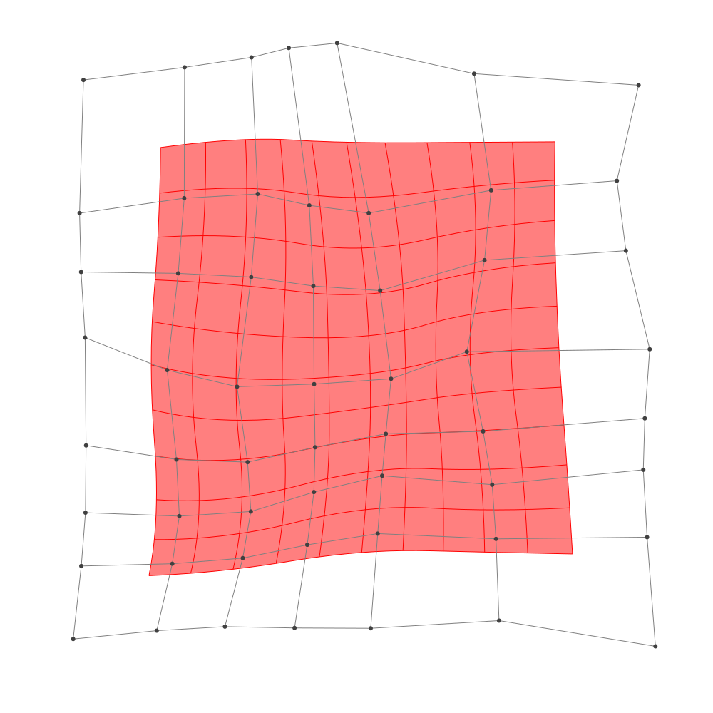
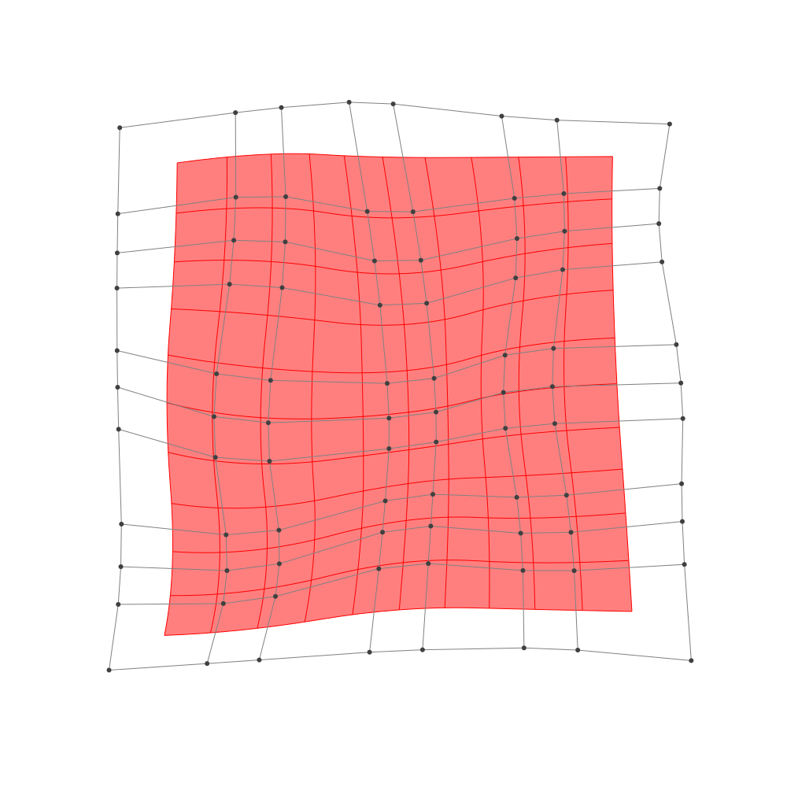

Refinement
Documentation
BasicBSpline.refinement — FunctionRefinement of B-spline manifold with given B-spline spaces.
Example
Define original manifold
p = 2 # degree of polynomial
k = KnotVector(1:8) # knot vector
P = BSplineSpace{p}(k) # B-spline space
rand_a = [SVector(rand(), rand()) for i in 1:dim(P), j in 1:dim(P)]
a = [SVector(2*i-6.5, 2*j-6.5) for i in 1:dim(P), j in 1:dim(P)] + rand_a # random
M = BSplineManifold(a,(P,P)) # Define B-spline manifoldh-refinemnet
Insert additional knots to knot vector.
julia> k₊=(KnotVector(3.3,4.2),KnotVector(3.8,3.2,5.3)) # additional knotvectors(KnotVector([3.3, 4.2]), KnotVector([3.2, 3.8, 5.3]))julia> M_h = refinement(M,k₊=k₊) # refinement of B-spline manifoldBSplineManifold{2, (2, 2), StaticArrays.SVector{2, Float64}, Tuple{BSplineSpace{2, Float64}, BSplineSpace{2, Float64}}}((BSplineSpace{2, Float64}(KnotVector([1.0, 2.0, 3.0, 3.3, 4.0, 4.2, 5.0, 6.0, 7.0, 8.0])), BSplineSpace{2, Float64}(KnotVector([1.0, 2.0, 3.0, 3.2, 3.8, 4.0, 5.0, 5.3, 6.0, 7.0, 8.0]))), StaticArrays.SVector{2, Float64}[[-3.9733810896577926, -3.9624076967108697] [-3.8599083157075205, -2.9383870639066147] … [-3.883944553929127, 2.010426099943995] [-3.8297698121920956, 3.8786273579979005]; [-2.801964789379946, -3.8454907162444467] [-2.583824620563493, -2.906654994397528] … [-2.4162535535095886, 2.2205297697076736] [-2.41059393463033, 4.055920614282603]; … ; [1.9989197525205915, -3.704610293977694] [1.9560485773425091, -2.558023611360613] … [1.887633540192449, 2.33131151244521] [1.6490967222847472, 3.966771962522068]; [4.19271243872267, -4.065052169175608] [4.075747640449276, -2.5344380664329655] … [3.6521826033517235, 2.464749500493325] [3.9565353356672666, 3.805901007189476]])julia> save_png("2dim_h-refinement.png", M_h) # save image

Note that this shape and the last shape are equivalent.
p-refinemnet
Increase the polynomial degree of B-spline manifold.
julia> p₊=(1,2) # additional degrees(1, 2)julia> M_p = refinement(M,p₊=p₊) # refinement of B-spline manifoldBSplineManifold{2, (3, 4), StaticArrays.SVector{2, Float64}, Tuple{BSplineSpace{3, Int64}, BSplineSpace{4, Int64}}}((BSplineSpace{3, Int64}(KnotVector([1, 2, 3, 3, 4, 4, 5, 5, 6, 6, 7, 8])), BSplineSpace{4, Int64}(KnotVector([1, 2, 3, 3, 3, 4, 4, 4, 5, 5, 5, 6, 6, 6, 7, 8]))), StaticArrays.SVector{2, Float64}[[-3.6145551992796885, -3.5148546721276794] [-3.4976297263582667, -2.6797060488415116] … [-3.5027035321046105, 2.2830974630185814] [-3.4781535517250255, 3.3770905992073077]; [-2.368372927684383, -3.431343628468671] [-2.161988142911526, -2.6690026213853555] … [-2.0032334409180876, 2.494629382115087] [-2.007953519577883, 3.568827397049529]; … ; [2.3415434867373417, -3.2602709179115106] [2.2955267264368113, -2.251444874046503] … [2.164306788812662, 2.5401875252979442] [2.0772154792809987, 3.473369266188183]; [3.7834903822344743, -3.393891218008575] [3.6963104979921035, -2.1717166074071446] … [3.383252403485374, 2.6060631296138865] [3.509058956786356, 3.4238295985901233]])julia> save_png("2dim_p-refinement.png", M_p) # save image

Note that this shape and the last shape are equivalent.